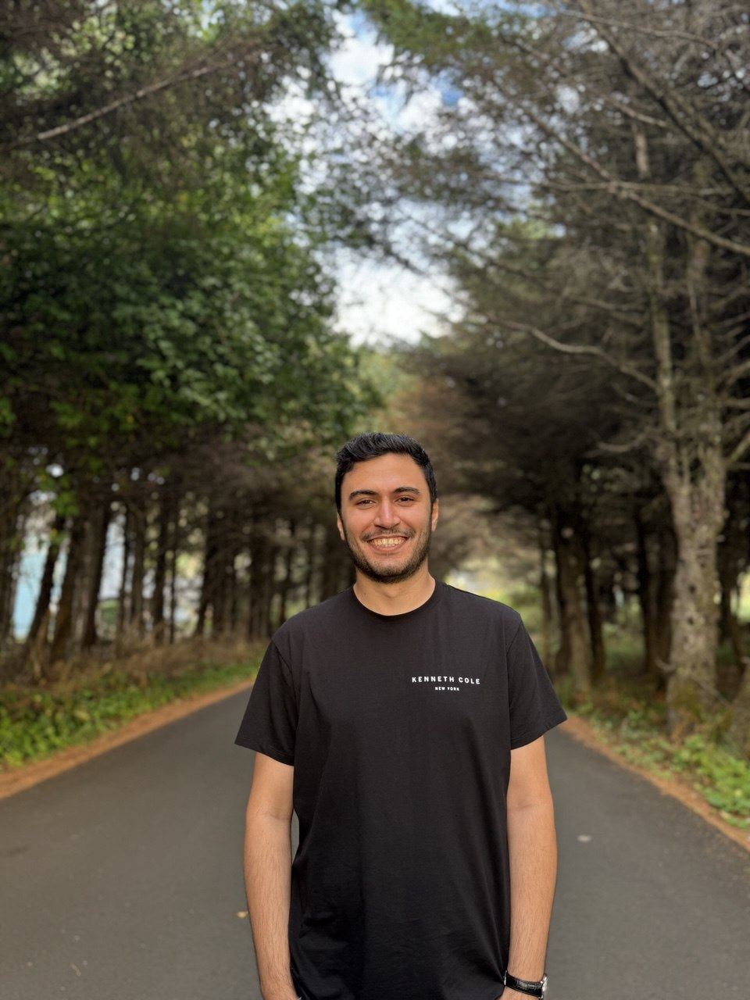
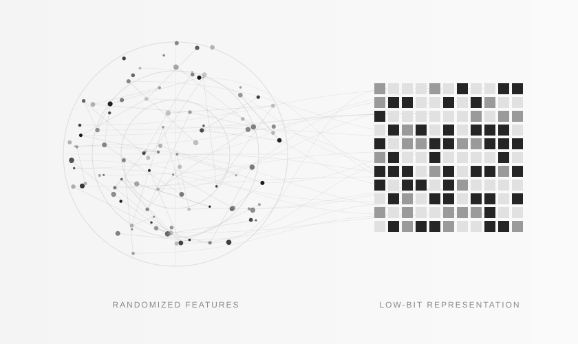

Angular Networks
Learning with randomized estimators of angular similarity, bringing geometric ideas into efficient low-precision neural networks.
Explore publication
Ph.D. researcher · Artificial Intelligence
I am a Ph.D. researcher in Artificial Intelligence at Oregon State University, where I began my doctorate in September 2023 and expect to graduate in June 2027. Advised by Prof. Alireza Aghasi, my work brings together statistical theory, randomized representations, and practical evaluation of neural networks.
I am seeking postdoctoral positions in efficient machine learning, low-precision neural networks, and randomized representations.

Learning with randomized estimators of angular similarity, bringing geometric ideas into efficient low-precision neural networks.
Explore publicationA construction that embeds full-precision networks into high-dimensional binary representations, without retraining or fine-tuning.
View codeAdvances in Neural Information Processing Systems · To appear
Advances in Neural Information Processing Systems
Journal of Artificial Intelligence Research